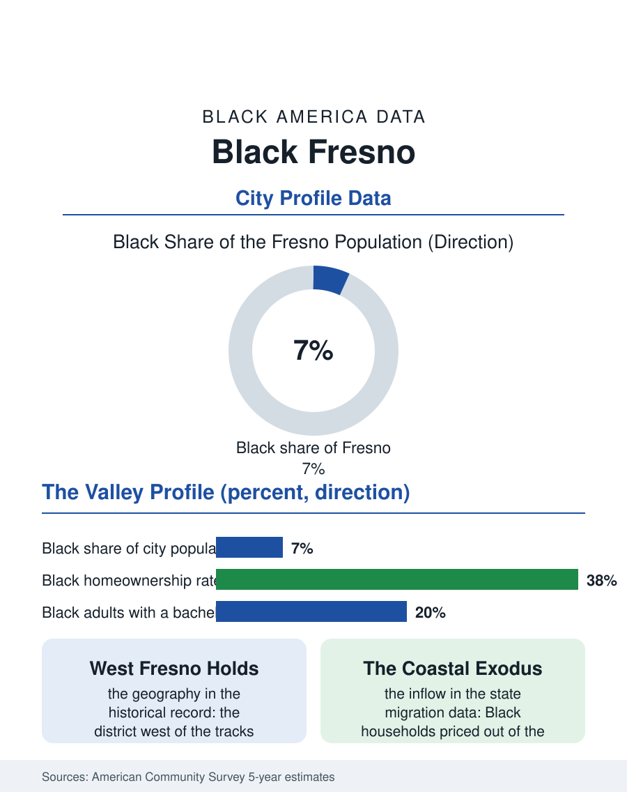

Black Cities
The Valley's Capital: Black Fresno
The largest Black community in the San Joaquin Valley, built by farm labor and the railroad, holding West Fresno for a century. The Fresno file.

Fresno's Black community, on the order of forty thousand people in a city of about five hundred forty thousand, is the largest in California's San Joaquin Valley, rooted in the West Fresno neighborhoods that farm labor, the railroad, and the wartime industries assembled, and still carrying the valley's central fact: this is agricultural country, and its Black history is written in the fields as much as in the city. The American Community Survey counts roughly seven to eight percent of the city. This article reads the Fresno file.
West Fresno and the Valley's Labor History
Black settlement in Fresno followed the Southern Pacific and Santa Fe lines and the valley's hunger for labor, but it was the Great Migration's western branch, drawn by wartime shipyard and defense work up and down the coast, that built West Fresno into a community: families from Texas, Louisiana, Oklahoma, and Arkansas who stopped in the valley or returned to it after the war years, buying homes in the district west of the tracks that segregation's customs assigned them. West Fresno acquired the full institutional set of the classic Black community, its churches, its business strip, its high school traditions, and its political organization, inside a farm economy that employed Black workers in the fields and packing sheds of the raisin, cotton, and table grape industries while the city's white economy ran on the same harvest. The postwar decades strained the district as they strained every such district in this atlas: freeway construction cut through the west side, disinvestment followed, and the packing economy mechanized. What distinguishes the Fresno file is persistence at scale: the community held its geography, produced Fresno's Black elected leadership across generations, and in recent decades has spread into the city's north and into Clovis's orbit, while West Fresno itself has become the focus of sustained reinvestment planning, community land trusts, and infrastructure campaigns aimed at reversing the freeway era's arithmetic.
The Numbers in the Survey
The ACS profile reflects the valley's economy honestly. Median Black household income in the Fresno metro runs below the California Black average, pulled by the agricultural and service wage structure, and poverty rates run above it, among the higher figures for large California metros, a function of the seasonal labor economy that still employs a share of the community and of the service economy layered on top of it. Educational attainment has climbed steadily in the survey cycles, carried by Fresno State, whose Black enrollment and alumni anchor the local professional class, and by the community college district, the valley's great escalator of first-generation credentials. Homeownership presents the file's two-sided figure: Black homeownership rates trail the citywide rate substantially, yet Fresno's housing prices, a fraction of the coastal metros', put ownership within theoretical reach of working families in a way San Francisco or Los Angeles no longer do, which is why the metro records a steady inflow of Black households from the coast, priced-out families executing the intrastate migration the state files document, arriving with equity or with remote salaries and redrawing the community's economic mix in real time. Health data add the valley's signature burden: air quality and asthma rates among the nation's worst, distributed across the west side's freeways and fields with the environmental file's usual precision.
The Valley's Center Holds
Fresno's forward file is written in water, heat, and housing. The valley's agricultural economy is reorganizing under groundwater law and mechanization, squeezing the field labor segment while expanding the logistics economy along the highway and rail corridors, warehouses whose workforces draw from the same neighborhoods. The city's growth, steady across the survey era, is pushing development toward the community's edges, and the land questions in West Fresno, who owns, who decides, who benefits, are being contested by a community with a century of organizational practice and a new generation of land-trust and development leadership. The cultural infrastructure keeps pace: Fresno's Black arts and Juneteenth institutions, its Black Greek life at the university, and the community media that cover the valley from a Black desk give the population a voice larger than its share. The Fresno file closes on the valley scale of things. Forty thousand people make this the Black capital of one of America's great agricultural regions, a community that survived the freeway, outlasted the packing sheds, and now negotiates with the warehouse era from ground it has held for a hundred years. The survey will keep counting Fresno's Black population near the top of the interior West's table, which is where a century of staying tends to put a community.
More in Black Cities
Black Atlanta: Population, Distribution, and Growth of a Black Metropolis
Metro Atlanta holds more than two million Black residents — roughly one in three, second only to New York. The suburban distribution, migration history, and composition of Black Atlanta in the census data.
Black New York: The Largest Black Population in America
The New York metropolitan area holds about 3.4 million Black residents — more than any metro in the nation — and the city itself about two million. The census profile.
Black Washington: The District and the Metro
The Washington metro holds about 1.6 million Black residents, and the District itself — long a majority-Black city — now records a Black share near 41 percent. The census profile.
Source: U.S. Census Bureau, American Community Survey 5-year estimates for the Fresno, CA metropolitan area; California State University, Fresno community records.